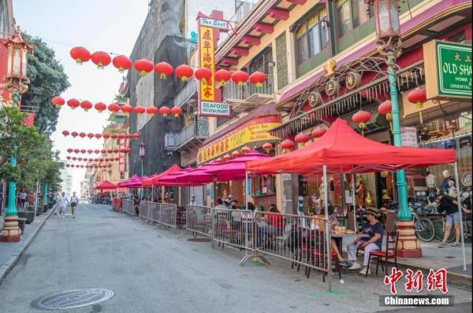
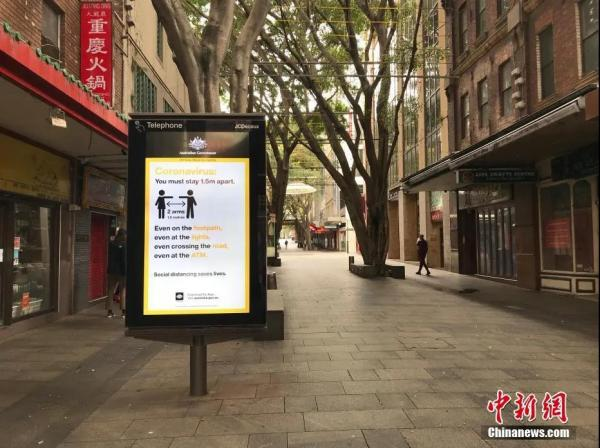
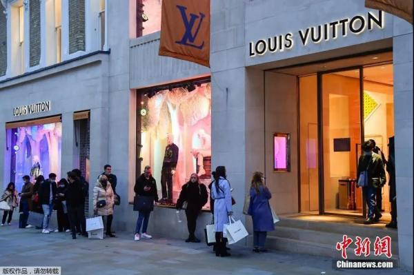

一年将过，疫情未走，各国唐人街都怎么样了？
转眼已是2020年年末，新冠肺炎疫情的阴霾犹在，多国遭遇第二波疫情，各种“封锁令”、“居家令”再次下达，刚有些复苏迹象的各行各业又面临新一轮挑战。
各国唐人街也未能幸免。作为华人商家和中餐馆集中的地段，唐人街在疫情中受到较大打击，如何突破疫情阴霾、探索新的出路，成为每一个唐人街面临的必答题。
美国唐人街：心怀希望 在生存中挣扎
截至当地时间12月7日，全美新冠确诊病例数累计已超1500万。疫情造成了美国社会经济急剧萎缩，唐人街更是首当其冲直面压力。游人减少、商铺陆续关门……过去熙来攘往的街区现已门可罗雀。

旧金山唐人街一家经营着中国工艺品的商铺正准备歇业。从业已有54年的店老板埃迪·欧解释说，疫情不是他关店的唯一原因。他说，目前经济不好，也不再有游客，唐人街恐怕需要三四年才能恢复，他认为是时候关店退休了。
旧金山旅游协会称，与上年度相比，2020年的游客数量减半，旅游支出也下降了近七成。与此同时，唐人街商铺的生意急剧下降，利润微薄的餐馆受到的打击尤其严重。
尽管如此，但人们愿意相信，唐人街也曾有过在逆境中生存的历史，这一次它也终将经受住考验。正因为心怀希望，人们用自己的方式开始积极行动。
“唐人街小巷旅游”就是旧金山华埠社区发展中心的一个创新性项目。这是一个由年轻人主导和设计的项目，内容是对唐人街街区和小巷展开历史文化旅游，最大的特色是从以往的线下实地游转变为未来线上的“虚拟游”。
在纽约曼哈顿，百年老店“永安和”发起了“给唐人街的情书”计划，向大众征求文章、诗词、画作等，希望以各种艺术形式表达对唐人街、对华埠的感情，带给社会更多正能量，并向外界传达坚定和信心。
纽约社区组织还举办在线活动“我们的唐人街地标：过去，现在，将来”，介绍华埠地标建筑及历史文化，希望让社区再度活跃起来。
澳大利亚唐人街：商家焦虑 政府来帮忙
受疫情和国际边境关闭的双重影响，澳大利亚经济一度陷入低迷。唐人街等旅游区因中国游客及留学生的减少，受到的影响尤为巨大。

罗尼·劳在悉尼Haymarket唐人街开美发沙龙已有多年，她说，她的顾客大多数来自中国，疫情期有人选择了回国。罗尼·劳说：“我问他们什么时候回来，他们说不知道。”她表示，疫情给生意造成重创，营业额减少了90%。而国际边境预计到2021年才能完全开放，这让她开始陷入焦虑。
同样在唐人街经营的商户老板纷纷表示，他们的营业额也在大幅减少，希望政府能够尽快取消旅行禁令。
为了提振当地餐饮业，墨尔本市议会近日出台了新措施，开展唐人街户外餐饮业务。
按照计划，墨尔本唐人街区域的主要道路将在周末时禁止车辆通行，餐厅从而有更多的户外空间；商户的营业范围也将扩大到人行道和路边花园，可以为顾客提供更多美食。
据悉，墨尔本市议会和唐人街区域协会已经展开合作，致力于推动户外餐饮发展。这也是维州政府价值1亿澳元的墨尔本城市复苏基金的一部分。
新加坡牛车水：创新思路 打造新露天餐饮模式
在新加坡，唐人街又称“牛车水”，因早年当地没有自来水、街上牛车运水的情景非常普遍，因而得名。
12月1日，新加坡牛车水美食街在经历了停业、重开等反复后，最终整装重发，再次热闹营业。与以往不同的是，这次为应对疫情，推出了新露天餐饮模式。
美食街经营方主管黄伟诗透露，牛车水美食街在整修过程中遇到的最大挑战是重新构思美食街的大方向，以吸引本地顾客。她欣喜地说，试营运期间，食客都觉得在牛车水美食街户外用餐、吃火锅和烧烤是很特别的体验，还表示喜欢装修后的布置装潢。“目前来看，一切进行得不错。”
35岁的吕珏葳是牛车水美食街一家摊位的老板，他说，选择这个时候进驻牛车水，一方面是为了传承家族生意，同时更是希望能打造出自身品牌。他说：“很多早期的华人摊贩都在牛车水起家，入驻牛车水美食街就像归根一样。”
对于在后疫情时代经营美食摊位，他有着自己的一套经营理念。他认为，除了要遵循传统做法，保留食材的原汁原味以外，提升食物品质、加强员工培训等也很重要。而且，疫情时期，店铺选址不仅要考虑人流，也要考虑整体地理位置以及送餐服务的能力。
英国唐人街：生意难做 中餐业主积极自救
12月2日，在刚结束为期四周的封城之后，英国政府正式实施“加强版”应对新冠肺炎防疫限制三级体系。
政府防疫措施严格，游客减少，“唐人街的生意越来越难做，”英国湖南同乡会秘书长方刚不无感慨地说。
伦敦某中餐馆经理姚迪也说，唐人街餐饮业普遍面临店铺租金高昂、防疫管控严格、人流量不足等诸多难题，不少餐馆迫于经营压力，已遗憾关门。
与此同时，也有中餐业主积极自救，不仅开辟了生鲜配送、小程序点餐等服务，更是发展了中餐团购等新业务，求生欲更加强烈。
位于唐人街的川菜馆“峨嵋一派”开业已有10年，今年迫于形势压力，第一次开展团购业务。店主Yoki坦言，作为中餐团购的“萌新”，刚开始也充满了波折。送餐、菜品保鲜等都是团购业务面临的新难题。

她透露，在经历一系列挫折后，送餐方式、团购价格等都做出了调整，消费者现在既可以享受优惠又不用去太远的地方取餐了。
米齐临合伙人熊鹏则是另辟蹊径，在生鲜派送业务之外，推出了小程序平台“米齐临美食汇”。他介绍，这个程序可以更好地实现唐人街联合点餐的功能。
他说，目前在伦敦注册的商户大概有近30家，不仅仅局限于唐人街周边，而是遍布全伦敦，商家在平台注册并上传菜单，就能实现相应的订餐和点餐服务了，非常方便。
道阻且长，行则将至。虽然形势艰难，但众多唐人街的经营者依然抱有希望，在努力坚守。因为他们知道，自己坚守的不只是生意，更是一份精神寄托，“唐人街是华侨华人的第二个家”，即使再苦再难也要坚持下去。
来源：中国侨网微信公众号(ID:qiaowangzhongguo)作者：王琴
参考资料：中国侨网、参考消息网、美国《侨报》、澳洲网、欧洲时报、新加坡《联合早报》等